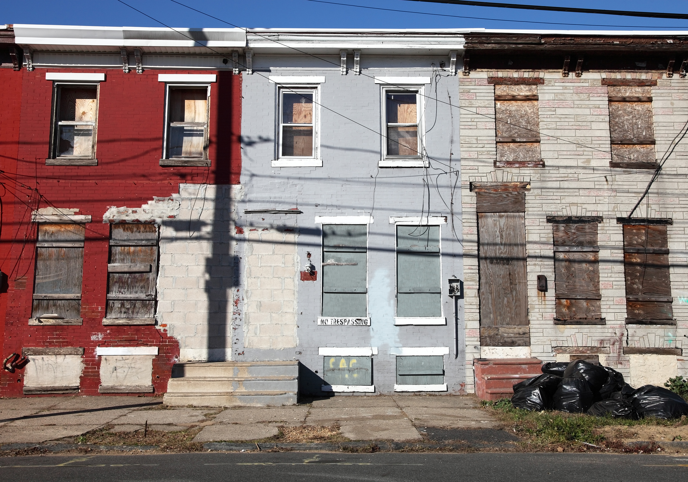

Working Towards a Brighter Future
Know God, Grow and find freedom, Discover your purpose and gifts, and Go make a lasting difference for God.
About Our Church
Our roots are growing deep and wide.
Daybreak Community Church knows that our strength lies not only in the words we stand by but most importantly through the actions of our initiatives. Back in 1998 we realized that by working together we could overcome our challenges much more efficiently, and that is why we ultimately decided to launch Daybreak Community Church. Please join in our quest to make a difference in the lives of our and surrounding communities. We are currently working with Lapelfoodpantry.com to reach out along with many others who have joined in as well. Along with that food pantry program we are currently serving hot meals to kids on Wednesday nights during the school year. We realize that this may be the only hot meal for some of our students. Join us as we reach our families in the community!
“At Daybreak Community Church we are making a difference in the hearts and minds of those that we meet. We love God! We love people! We love YOU!”
Know
Help people Know God personally through Sunday worship, authentic discipleship, and faith in Jesus Christ.
Grow
Grow and find true freedom alongside supportive community through small groups, youth programs, and recovery.
Discover
Discover the unique gifts, passions, and divine calling that God has uniquely instilled within you.
Go
Go and make a lasting impact for God through hot student meals, food pantry outreach, sports leagues, and global missions.
Activities & Ministries
Wednesday Night Classes & Hot Meals
Daybreak Community Church is in the business of changing and shaping lives. We teach classes on Wednesday nights for kids, teens, ladies, and men starting at 6 p.m. Along with that, we are currently serving hot meals to kids on Wednesday nights during the school year. We realize that this may be the only hot meal for some of our students. Join us as we reach our families in the community!
Sports & Young Adult Ministry
Our sports ministry is active with over 30 young adults involved in them. Some of our activities include: Coed and Men's Softball, Coed Volleyball, 3 on 3 basketball, noodle making for the village fair, personal growth classes, game nights, bible study, prayer groups, worship nights, kids and teen camp, marriage retreat, Fall Festival/trunk n Treat, and many others.

Food Donations Drop-Off Center
At Daybreak Community Church, we are dedicated to stepping up our efforts in addressing this issue. Food Donation Drop-Off is by no means an easy feat, but through cooperation and community empowerment we believe we can facilitate progress in this area. We are always striving to make a difference, and invite you to learn more and lend your support. Currently, we are also picking up donations for our friends at lapelfoodpantry.com be sure to visit their page to make any monetary donations directly to them.
Over Seas Missions
With this initiative, our goal is to promote great opportunities for those in need. With access to the right resources, people can become empowered by their own abilities and gain the confidence to fulfill their potential. Learn more about our work by getting in touch with our team today.

Recovery Programs
With our organization’s mission always in mind, we strive to find new strategies for dealing with this challenge. Sober living is something that we take very seriously, and our team is working each and every day to make a positive impact. Contact us to learn more about our commitment to this cause.
Upcoming Events & Calendar
Connect with our church family through upcoming services, seasonal traditions, and community gatherings in Lapel.
Lapel Village Fair / Car Show
Community Outreach • 1219 Main StSunday Morning Worship Service
In-Person Sanctuary & Online StreamWednesday Classes & Hot Meals for Kids
Hot Dinners for Students • Classes for Kids, Teens, Ladies & MenNoodle Making for the Village Fair
Beloved Annual Church & Town TraditionYoung Adult Softball, Volleyball & Basketball
30+ Young Adults Active • Friendly Christian FellowshipFall Festival & Trunk-n-Treat
Free Community Event for Kids & FamiliesWatch Online
Pastor Andy Cole Invites you to visit us. If you are trying to find video sermons please look no further... you have made it. We are uploading content regularly so please check back often to stay informed on the events and our revised schedule of events to come. Watch Lapel Daybreak Online.
We’d Love to Welcome You to Daybreak
Whether you’re joining us for Sunday worship, looking for community, or seeking prayer, our church family in Lapel welcomes you with open arms.
Campus & Service Times
Join us in person right in the heart of Lapel. Everyone is welcome just as you are.
Location & Address
Daybreak Community Church
1219 Main St, Lapel, IN 46051
Serving Lapel, Anderson, Pendleton, Noblesville & surrounding areas
Worship & Gathering Times
Sunday Morning Worship: 10:45 AM
Wednesday Family Night: 6:00 PM
Hot meal served + classes for Kids, Teens, Ladies & Men
Direct Contact
Telephone: (765) 534-4555
Pastor Email: acole@lapeldaybreak.com
Send Us a Message
Have questions, prayer requests, or want to connect with Daybreak? Fill out this note and our team will reach out.